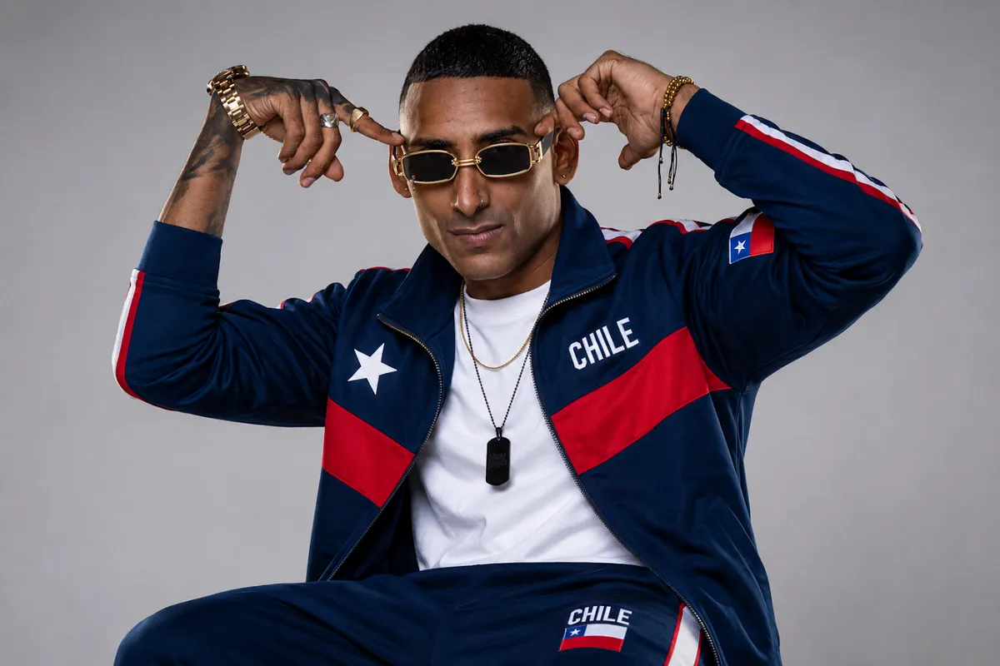

Historia
Datos y
calle.
Diego Alexander Gasca Martínez es DJ, productor, compositor, fotógrafo y modelo. Como Prey Hunter llegó al top 2% del ranking global de artistas; como dueño de Cartel Music distribuye por ONErpm y DistroKid; y con Salsafro llevó la salsa y la percusión del Pacífico al Afro House.
Habla con datos y con calle: cada cifra que publica está verificada. En 2026 dirige toda su operación desde el Cerebro Central, un sistema propio que reúne finanzas, catálogo, fans y agentes de inteligencia artificial.
Una regla de la casa: en los negocios, la persona y el artista van por separado.